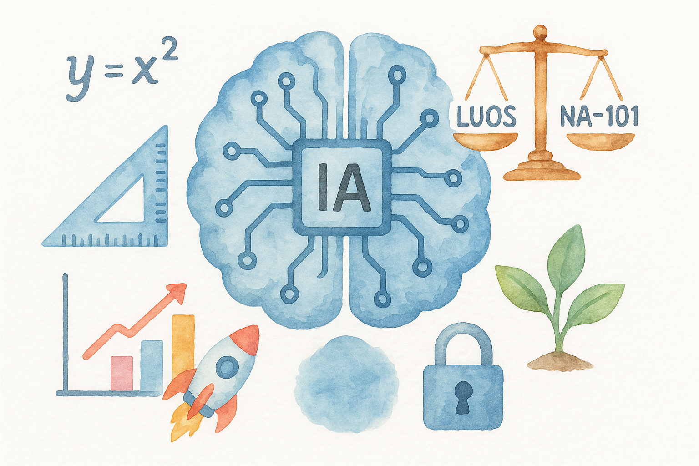
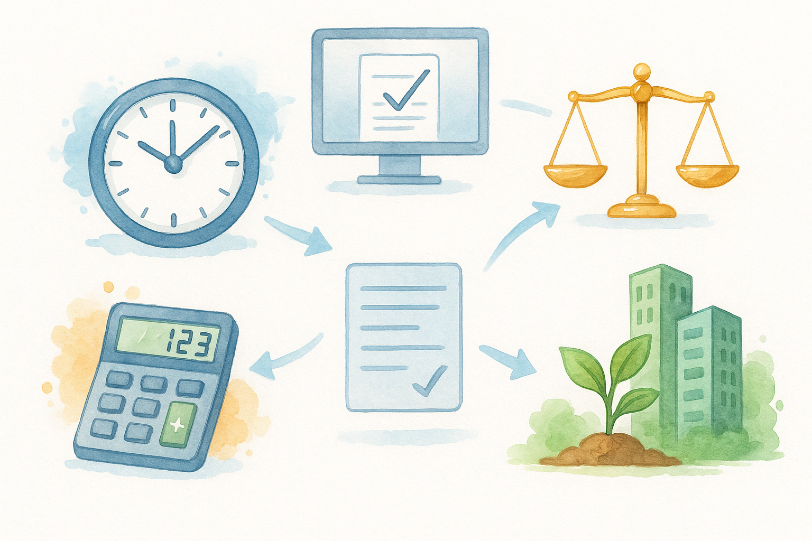

Inteligência Artificial para Automatização de Cálculos no Licenciamento Ambiental
Tema da Proposta: Tema 6 (Licenciamento ambiental) do Edital N.º 007/2025, INOVATEC - JP
Apresentador: Prof. Dr. Eufrásio de Andrade Lima Neto
Coordenador: Prof. Dr. Pedro Rafael D. Marinho
Universidade Federal da Paraíba - UFPB
31/10/2025
Parceria
Inovatec + UFPB
Licenciamento Ambiental + Inteligência Artificial
🌍🌊💧🌲🪵🌱
Equipe
Equipe multidisciplinar com experiência em projetos em diversos projetos de pesquisa.
🌍 Contexto
- 🌱 Demanda crescente: aumento expressivo de solicitações de licenciamento em João Pessoa.
- ⚖️ Exigência legal: cumprimento rigoroso da LUOS (Lei 166/2024) e da NA-101/Sudema.
- 🔎 Complexidade: múltiplas etapas técnicas e jurídicas envolvidas.
- 💡 Oportunidade: uso de tecnologia para tornar o processo mais ágil, preciso e transparente.
📜 LUOS define zoneamento urbano; NA-101 detalha parâmetros técnicos para licenciamento ambiental.

⚠️ Problema
- 📑 Burocracia → excesso de papéis e etapas manuais.
- 🕒 Tempo → processos que poderiam durar dias levam semanas ou meses.
- 🧮 Inconsistências → cálculos manuais, suscetíveis a inconsistências.
- ⚖️ Subjetividade → interpretações diferentes da lei entre técnicos.
- 🔒 Falta de transparência → gera insegurança para órgãos e empreendedores.
- 🌍 Impacto direto: atraso no desenvolvimento urbano e entraves à gestão ambiental.
Desafios do Licenciamento Ambiental: 📑 Burocracia • 🕒 Tempo • 🧮 Inconsistências ⚖️ Subjetividade • 🔒 Falta de transparência • 🌍 Impacto no desenvolvimento.
O tema já é debatido em outros estados brasileiros
🎯 Objetivo Geral
- Desenvolver e implementar um protótipo de sistema de IA para automatizar:
- 📑 Cálculos técnicos do licenciamento ambiental
- ⚖️ Análise de conformidade com a LUOS e a NA-101
- Garantia de processos:
- 🚀 Ágeis
- 🔒 Transparentes e Confiáveis
- 🌱 Sustentáveis
📝 Objetivos Específicos
- 🤖 Estruturar as regras da LUOS e da NA - 101 em modelos de inteligência artificial.
- 🔌 Criar uma API para integração com outros sistemas.
- 💻 Desenvolver um protótipo de aplicação web interativa (Shiny).
- ✅ Validar a aplicação com a área técnica.
- 📢 Disseminar os resultados em artigos, workshops e repositório aberto.
Como funcionará o protótipo?
🖥️🌐
Clique 🖱️AQUI
🖥️🌐
Clique 🖱️AQUI
📅 Cronograma de Atividades (12 meses)
Início das atividades: 15 de setembro de 2025.
| Atividade | 1-2 | 3-4 | 5-6 | 7-8 | 9-10 | 11-12 |
|---|---|---|---|---|---|---|
| Leitura técnica da LUOS e NA-101 | ✅ | ✅ | ||||
| Processamento dos textos das resoluções (LUOS/NA-101) | ✅ | ✅ | ||||
| Pré-processamento de dados | ✅ | ✅ | ||||
| Integração de LLMs | ✅ | ✅ | ||||
| Criação da API + protótipo da aplicação Web | ✅ | ✅ | ||||
| Testes do aplicativo (integração e usabilidade) | ✅ | ✅ | ||||
| Validação com dados reais | ✅ | ✅ | ||||
| Relatórios automáticos + documentação técnica | ✅ | |||||
| Divulgação científica e workshops | ✅ |
✅ = meses de execução da atividade
🚀 Resultados Esperados
- ⏳ Redução no tempo de análise de processos
- 📑 Padronização das decisões → menos erros e retrabalho
- 🔍 Transparência: relatórios automáticos e auditáveis
- ⚖️ Segurança jurídica para empreendedores e órgãos
- 🌍 Gestão ambiental proativa baseada em dados

Ações realizadas 🚀
Início das atividades: 15 de setembro de 2025.
De lá pra cá (≈1 mês) tivemos:
- 🧾 Reunião da equipe: análise das legislações vigentes (LUOS, NA-101). Sugestão aprimorada:
- 🧩 Reunião com a área técnica: encontro com a equipe técnica da SEMAM para aprofundar o entendimento das questões inerentes ao edital.
- 🎤 Participação de membro da equipe em organizaçãode evento em área de interesse:
- Nome do evento: Seminário Ambiental de Saneamento Ambiental da Paraíba.
- Data: 20 e 21 de outubro de 2025.
- Tema: Saneamento para Todos: desafios e oportunidades.
- 🤝 Reunião institucional: encontro com o Secretário da SEMAM e equipe técnica para alinhamento e próximos passos.